1 认识游戏
1.1 什么是游戏
1.1.1 游戏的定义
具体定义
1.1.2 游戏分类
RPG
ACT
AVG

FPS
TPS
FTG
SPT
RAC
RTS
STG
SLG
MSC
SIM
TCG
CAG
LVG
GAL
WAG
MMORPG

ARPG
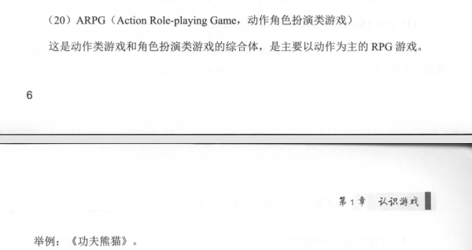
ETC
动漫游戏
MOBA
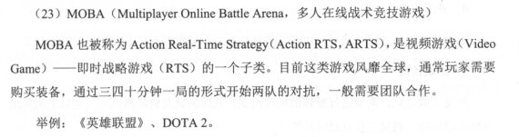
1.2 游戏开发及分工
开发过程
1 产品立项
2 游戏设计
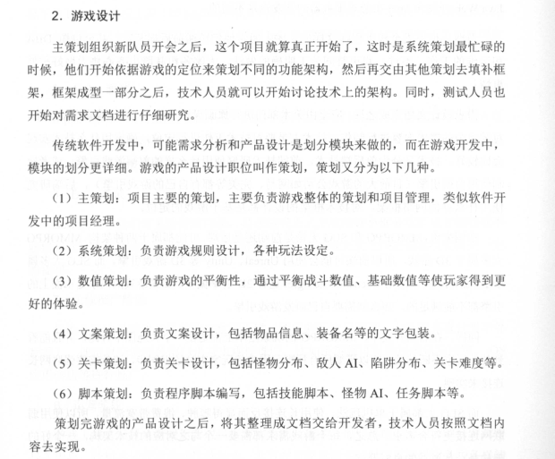
3 开发阶段
4 测试阶段
5 Alpha测试
6 Beta测试
7 上线推广阶段
8 运营阶段
1.3 游戏行业现状分析
做游戏不能只以赚钱为目的，我们的终极目标是
做出玩家真正喜欢的游戏。
1.4 游戏服务器开发要点
要点
1.5 总结
2 环境搭建
2.1 Windows开发环境搭建
2.1.1 JDK安装
1 设置Path变量
2 设置CLASSPATH环境变量
3 设置JAVA_HOME
2.1.2 安装Eclipse
2.1.3 安装数据库客户端工具
2.1.4 安装SSH工具
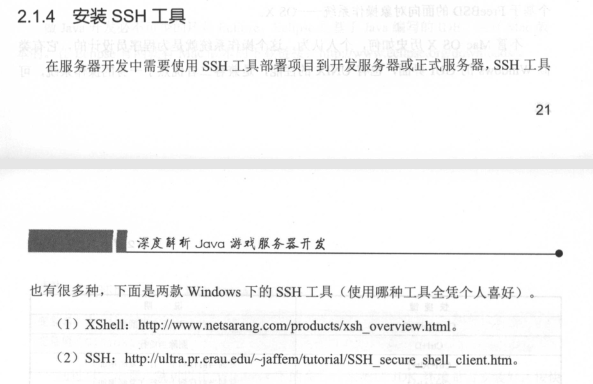
xshell目前都有一定的安全风险，目前我司选择的是SecureCRT的试用版，或者直接ssh2.1.5 安装其他工具
2.2 Mac OSX开发环境搭建
2.2.1 安装JDK
2.2.2 安装Eclipse
2.2.3 安装数据库客户端工具
2.2.4 安装SSH工具
2.2.5 安装其他工具
2.3 Linux服务器环境搭建
2.3.1 安装JDK
2.3.2 安装Tomcat
2.3.3 安装Mysql
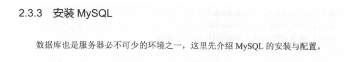
1 下载编译安装
2 启动MYSQL

3 配置开机启动
4 登录测试
5 设置初始密码
2.3.4 安装Mongo
下载安装包和安装准备
设置开机自启动
启动Mongo

登录测试
2.3.5 安装Redis
安装过程
开启Rdis端口
启动Redis服务
测试Redis
关闭Redis服务
2.3.6 安装Memcache
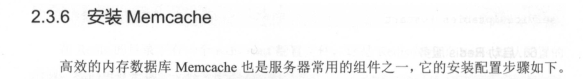
安装libevent
安装Memcache
启动Memcache服务
2.4 总结
3 网络通信
3.1 通信协议
4层网络模型
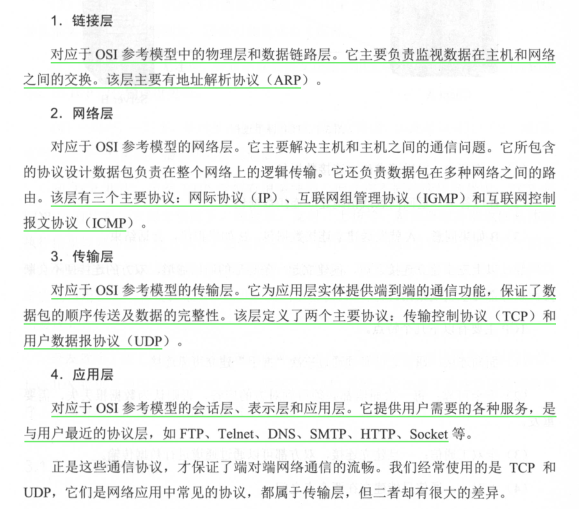
3.1.1 面向连接的TCP
3.1.2 面向数据包的UDP
对比
3.1.3 HTTP编程
3.1.4 Socket编程
过程
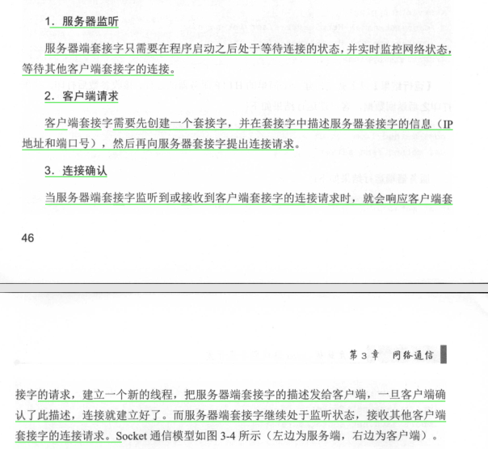
Socket连接过程
3.1.5 WebSocket编程
3.2 Java NIO基础
3.2.1 BIO编程 Blocking-IO 阻塞式ID
BIO 就是传统的 java.io 包，它是基于流模型实现的，交互的方式是同步、阻塞方式，也就是说在读入输入流或者输出流时，在读写动作完成之前，线程会一直阻塞在那里，它们之间的调用时可靠的线性顺序。它的有点就是代码比较简单、直观；缺点就是 IO 的效率和扩展性很低，容易成为应用性能瓶颈。3.2.2 NIO编程 Non-Blocking IO 非阻塞式IO
NIO 是 Java 1.4 引入的 java.nio 包，提供了 Channel、Selector、Buffer 等新的抽象，可以构建多路复用的、同步非阻塞 IO 程序，同时提供了更接近操作系统底层高性能的数据操作方式。3.2.3 AIO编程 Async IO/NIO2.0 异步IO
AIO 是 Java 1.7 之后引入的包，是 NIO 的升级版本，提供了异步非堵塞的 IO 操作方式，所以人们叫它 AIO（Asynchronous IO），异步 IO 是基于事件和回调机制实现的，也就是应用操作之后会直接返回，不会堵塞在那里，当后台处理完成，操作系统会通知相应的线程进行后续的操作。
3.3 Mina的介绍及其使用
3.3.1 总体架构
3.3.2 IoSerice

3.3.3 IoFilterChain
3.3.4 IoHandler
3.3.5 IoSession
3.3.6 工作原理
3.3.7 Acceptor与Connector线程
3.3.8 Processor线程
3.3.9 线程模型
图
线程模型
3.3.10 请求的处理顺序
3.3.11 Mina编程
3.4 Netty的介绍及其使用
3.4.1 总体框架

3.4.2 零拷贝
3.4.3 Codec框架
3.4.4 Channel
3.4.5 ChannelEvent
3.4.6 ChannelPipeline
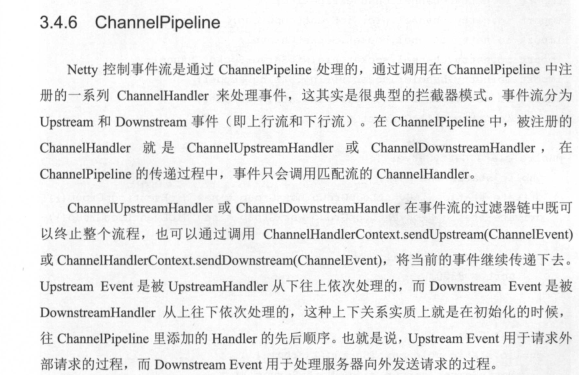
3.4.7 Netty编程
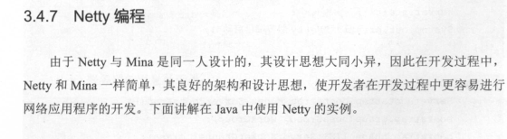
3.5 总结
4 数据交互

4.1 数据传输格式
1 网络数据大小
2 网络数据安全性
3 实现复杂度
4 协议通用性
数据传输格式类型
4.2 JSON
4.2.1 JSON语法
4.2.2 JSON对象
4.2.3 JSON数组
4.2.4 Java中的Json解析
4.3 XML的使用及解析

4.3.1 XML特征
4.3.2 数据共享
4.3.3 数据传输
4.3.4 平台兼容
4.3.5 JSON与XML的比较
4.3.6 Java中的XML解析
4.4 Google Protocol Buffer
4.4.1 Protocol Buffer的安装通用编译
4.4.2 pprotobuffer 语法
4.4.3 生成Java类
4.5 总结
5 数据缓存与持久化
5.1 游戏数据存储
5.1.1 数据分类
5.1.2 数据缓存方式
redis和memcache5.1.3 数据持久化方式
5.1.4 数据库比较
5.2 MySQL的介绍及使用
5.2.1 特点
5.2.2 数据类型
5.2.3 MySQL的使用
5.2.4 Java中使用MySQL
5.3 MongoDB的介绍与使用
5.3.1 主要特点
文档存储
可扩展性
易查询
安全性
5.3.2 API
5.3.3 Mongo的使用
5.4 Memcache的介绍与使用
5.4.1 Memchache的特点
5.4.2 Memcache使用场景
5.4.3 Java中使用Memcache
5.4.4 客户端使用要点
5.5 Redis的介绍及使用
5.5.1 Redis特点
速度快
数据类型丰富
操作原子性

持久化
应用场景丰富
5.5.2 Redis的持久化
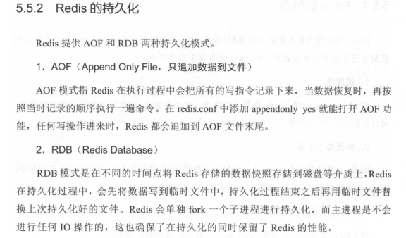
写一遍Redis的持久化文章
生产环境中是都在使用5.5.3 Redis的主从复制
高可用，redis的主从复制以及哨兵模式5.5.4 Java中使用Redis

5.6 总结
6 游戏逻辑
6.1 逻辑架构
6.1.1 项目目录
6.1.2 模块介绍
core核心模块
manager逻辑模块
net 网络模块
task 任务模块
template 静态数据
util 工具类
test 测试
6.2 逻辑流程
6.2.1 网络模块
6.2.2 线程池
需要整理一篇线程池原理，实现方式，性能优化方面的文章6.2.3 启动服务器
6.2.4 逻辑请求处理
6.2.5 关闭服务器
6.3 事件处理器
6.4 定时任务
6.5 RPC框架
这一块要核心学习整理
重点之重点6.5.1 Json-rpc

6.5.2 Motan
Motan优点
6.6 总结
7 游戏安全
7.1 游戏安全的必要性

需求
7.2 登录安全
7.3 游戏充值
7.4 SQL注入
7.5 通信协议与消息格式
7.6 整数溢出
7.7 并发请求
7.8 逻辑漏洞
7.9 日志系统
7.10 总结
8 服务器架构分析
8.1 服务器架构的演变过程
8.2 全区同服架构分析
8.2.1 COC架构模型分析
架构图
8.3 分区分服架构分析
英雄联盟服务器架构图
8.4 弱联网类游戏架构分析
天天酷跑服务器架构图
8.5 MMORPG类游戏架构分析
剑灵服务器架构图
8.6 总结
9 皇室战争游戏开发实战
9.1 微竞技游戏介绍
9.2 架构分析及搭建
9.2.1 功能分析

9.2.2 服务器部署架构
9.2.3 系统架构
通信机制
数据处理
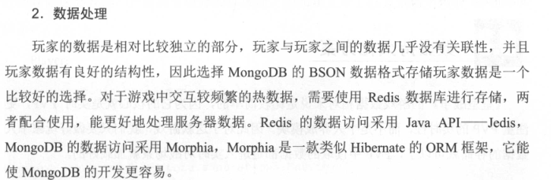
项目管理
系统技术架构图
9.3 数据持久化方案
9.3.1 数据结构分析
9.3.2 使用Morphia操作MongoDB
9.4 Netty网络框架的使用
9.4.1 Netty实现的HTTP服务器
9.4.2 Netty实现的TCP服务器
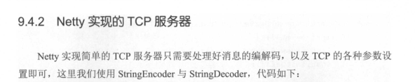
9.5 账号系统
9.6 个人信息
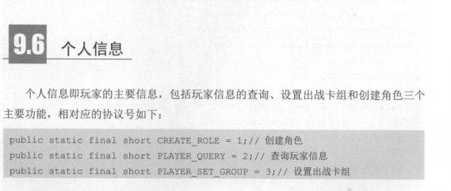
9.7 英雄卡牌系统
9.8 宝箱系统
9.9 战斗系统
9.10 客户端模拟
10 游戏开发技术前景
10.1 Egret
10.2 Cocos 2D
10.3 Unity
10.4 Unreal
10.5 Java
10.6 Node.js
10.7 总结